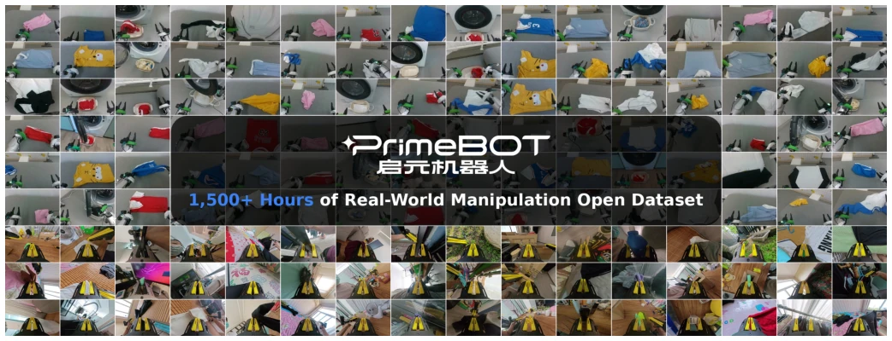
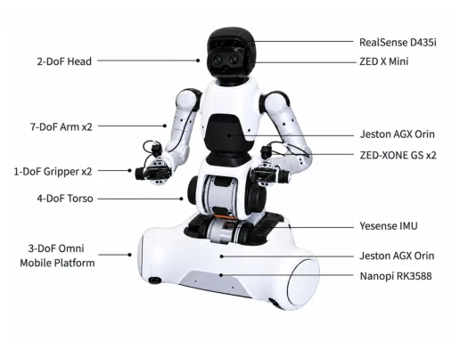
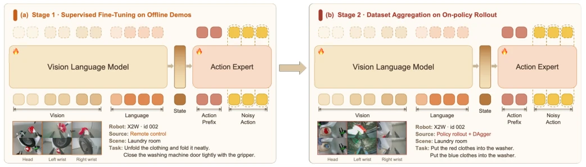
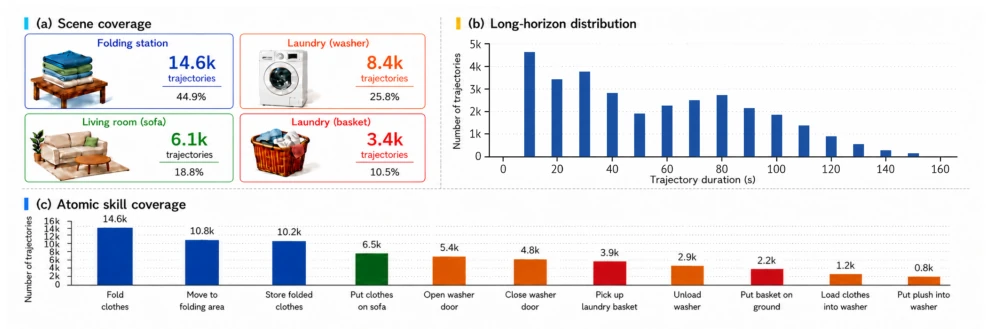
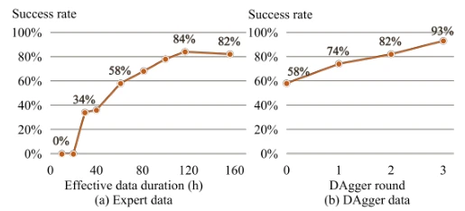
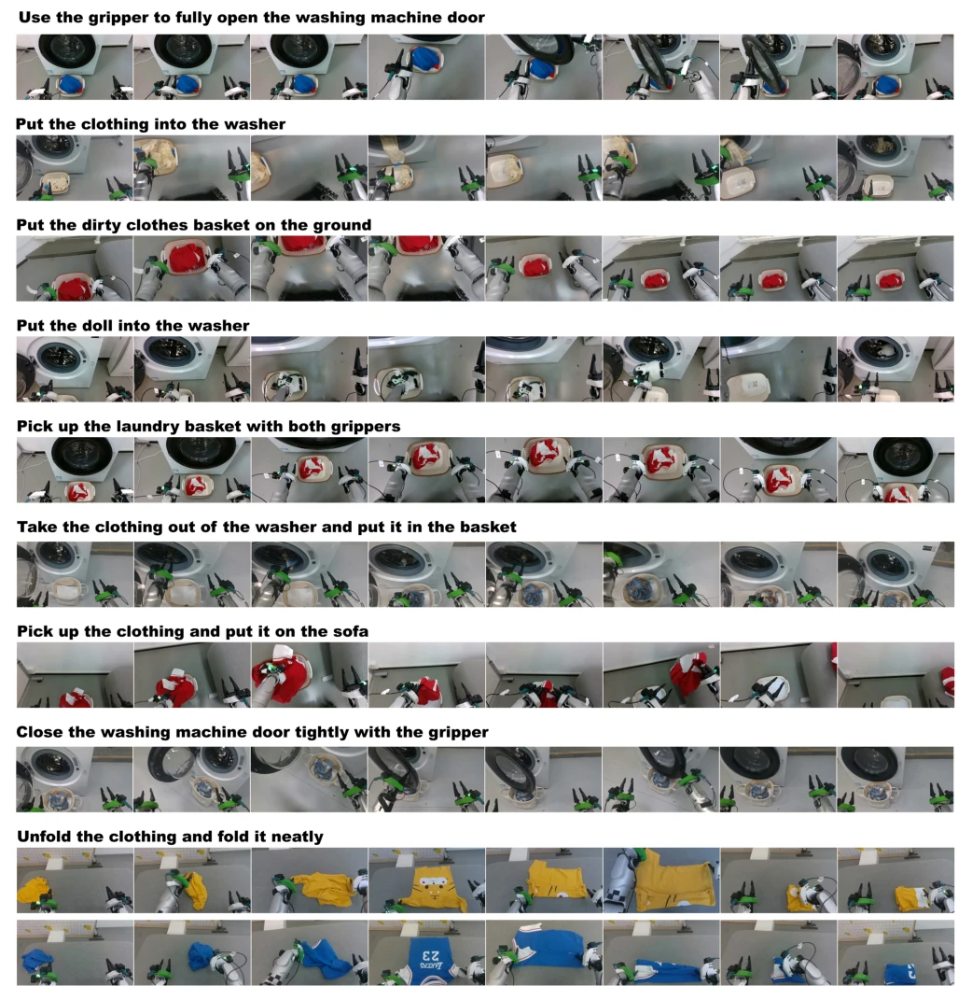
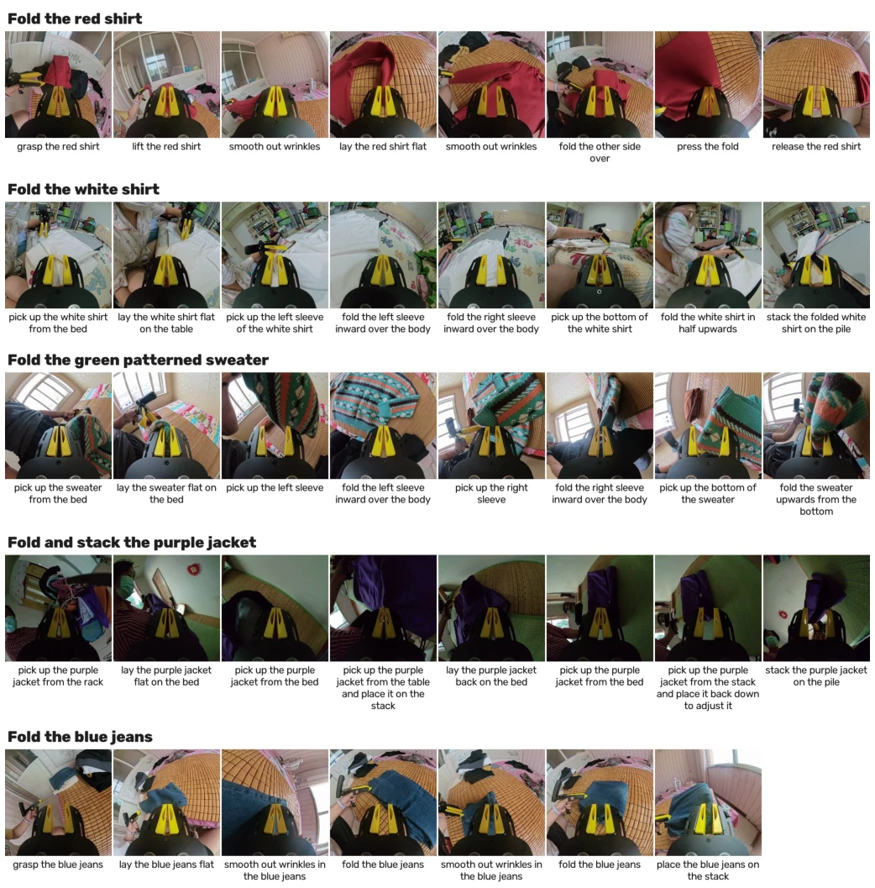

This paper attempts to address the dual-arm manipulation bottleneck using massive data. The 1500 hours of data volume is indeed impressive, particularly the open-source attitude deserves commendation. The XR-2 model performed well on the clothes folding task, successfully verifying the complementarity between expert data and DAgger correction data, demonstrating the effectiveness of data scaling. However, one should not be too optimistic; nearly 1000 hours out of the 1500 are UMI handheld device data, lacking robot proprioception, and whether directly fusing training can truly learn physical interaction is questionable. Real robot data only covers 4 scenarios, raising doubts about generalization, and UMI data is monocular view, differing from the real robot's multi-view. Although DAgger improved the success rate, it relies on human intervention, so the cost of scaled deployment remains a question. Furthermore, the 5B model parameters are not large in the VLA context; the performance improvement is attributed more to data cleaning and pipeline design than architecture innovation. Overall, the data contribution outweighs model innovation, making it suitable for benchmark testing, but it is still far from general home robots. Especially failure recovery in long-horizon tasks still relies on real humans; while the scaling law verification is good, practical application still faces thresholds.
Dual-arm manipulation requires coordination and long-horizon execution, yet high-quality large-scale human demonstration data is scarce [1]-[5]. Although existing VLA models [6]-[9] and robot datasets [10]-[14] have promoted data expansion, the core issue has shifted from "how much data to collect" to "which data is most valuable". Offline expert demonstrations provide successful behaviors, whereas online DAgger data captures failure states during deployment. Existing works often focus on a single data source, lacking systematic research on how these two complementary data sources jointly scale dual-arm policy learning. Furthermore, real robot data collection is costly and difficult to cover failure states in long-horizon tasks, leading to policy failure during testing. This paper aims to address this bottleneck by constructing a large-scale mixed dataset and comparing the scaling effects of expert and correction data, verifying the limits of data-driven policies, and filling the gap in collaborative learning between offline and online data.

Fig. 1: Introducing PrimeBot Household Manipulation Dataset. The data encompasses core skills required for everyday housework: deformable-object manipulation, articulated-object interaction, appliance operation, and general tidying and object rearrangement. It integrates two complementary sources, bimanual real-robot teleoperation and UMI collection in diverse home scenes.
The overall process is divided into data construction and two-stage training. Regarding data, it integrates 531.7 hours of real robot teleoperation and 1000 hours of UMI handheld data, covering tasks such as folding and washing machine interaction. The XR-2 model adopts a 5B parameter VLA architecture, based on Qwen3-VL-4B-Instruct as the vision-language backbone, paired with a Flow Matching-based action diffusion Transformer as the action expert. Training is divided into two stages: the first stage fits the state distribution on offline expert data; the second stage utilizes DAgger to collect failure correction data from policy rollouts for post-training. The innovation lies in the data allocation strategy, dynamically adjusting DAgger data weights based on subtask success rates to prevent forgetting and focus on weak areas. At the control level, action generation supports asynchronous execution and latency compensation to ensure real-time performance. The action expert employs an 18-layer Transformer, combined with a Grouped KV Attention mechanism, injecting timestep information via AdaLN, supporting action chunk generation and smooth control to achieve low-latency robot control.

Fig. 2: X2W hardware configuration. The robot has 25 degrees of freedom. It is equipped with a variety of sensors, including the RealSense D435i, ZED X Mini and ZED-XONE GS cameras, as well as an inertial measurement unit (IMU) and heterogeneous computing units, supporting the performance of household bimanual manipulation tasks.

Fig. 4: Two-stage full-parameter training of XR-2. Both stages use the same VLM + action-expert architecture with all parameters trainable (flames); dashed tokens are model outputs. (a) Stage 1 fits offline teleoperated demonstrations Ddemo on expert-visited states. (b) Stage 2 initializes from Stage 1, rolls out the policy, collects expert corrections aexpert on the visited states, and retrains on the aggregated data—aligning training with the policy’s own state distribution.
Experiments were conducted on an RTX 4090, with the test environment including generalization settings. The main evaluation focuses on the success rate of the clothes folding task. Results show that as expert data increased from 10 hours to 120 hours, the success rate rose from 34% to 84%, but tended to saturate at 160 hours (82%). After introducing DAgger, three rounds of training increased the success rate from 58% to 93%, compensating for failure states during testing that expert data could not cover. Ablation experiments verified the effectiveness of the data allocation formula, ensuring weak tasks received sufficient correction data. The dataset contains 11 atomic skills, covering long-horizon tasks and fine-grained operations, with scenarios including folding stations, washing machines, sofas, etc. Results indicate that simply increasing expert data exhibits diminishing marginal returns; combining online correction data is key to improving policy robustness. Furthermore, the larger the data volume, the more significant the correction effect, verifying the applicability of the scaling law in dual-arm manipulation.

Fig. 3: Dataset statistics. (a) Scene coverage. Real-robot trajectories span four household interaction settings: folding station, laundry washer, sofa, and laundry basket. (b) Long-horizon distribution. The duration distribution exhibits broad coverage of long-horizon episodes, with a long tail reaching around 150 s. (c) Atomic skill coverage. Distribution of 11 atomic skills, covering high-frequency garment manipulation as well as less frequent but task-critical object-transfer primitives.

Fig. 5: Data scaling in the folding-clothes task. (a) Success rate versus the duration of effective expert data. (b) Success rate over three rounds of DAgger training initialized from a checkpoint with a 58% success rate.

Fig. 6: Representative real-robot demonstrations from the robot-mounted head camera. Each row shows a single trajectory: the heading above each image strip denotes the corresponding subtask instruction, and several frames are sampled along the trajectory to illustrate the progression of task execution. The examples cover a diverse set of household manipulation tasks, including washing-machine interaction, garment loading and unloading, object placement, bimanual laundry-basket manipulation, garment transfer, and long-horizon garment unfolding and folding.

Fig. 7: Representative UMI demonstrations from the egocentric wrist-mounted view. Each row shows one trajectory: the heading above each strip is the item-level task instruction, frames are sampled at the midpoints of the annotated fine-grained action steps, and the caption under each frame is the corresponding action-step annotation. Rows span four distinct households and five garment types, covering flat folding, sleeve-first folding, bimanual coordination, rack retrieval, and stacking onto a pile.